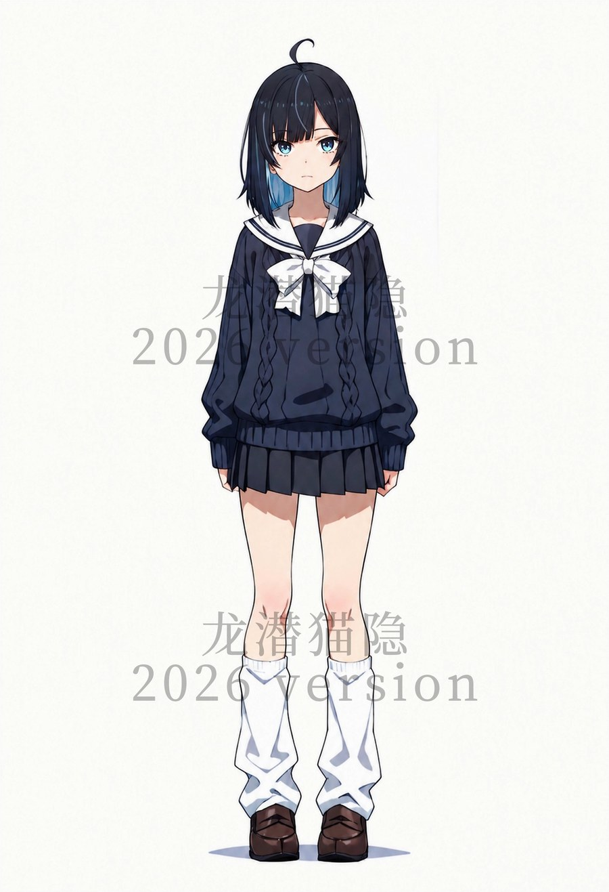

PERSONAL PAGE
龙潜猫隐
ELIAS NEKO
把热爱，一点一点做成能看到的现实。
2026 · PERSONAL ARCHIVE
01 / About Me
关于我
龙潜猫隐
「能上线的东西，才算做完。」
2026 · 龙潜猫隐02 / 项目
正在写的项目
咖啡店和书房是链接在一起的，可以自由跳转，且每个项目都写入了一个公用云端账号注册表，游客可以登录注册实现最佳体验。
03 / 虚拟形象
个人oc迭代更新中...
OC

CHARACTERS
姓名：龍音 汐（Ryuon Shio）
数据 ---- 年龄：17岁 / 身高：163cm / 体重：45kg
正在征集二创 · 之后会有 Q 版和更多版本的立绘，欢迎投稿至本人邮箱：hyyzcn0115@163.com